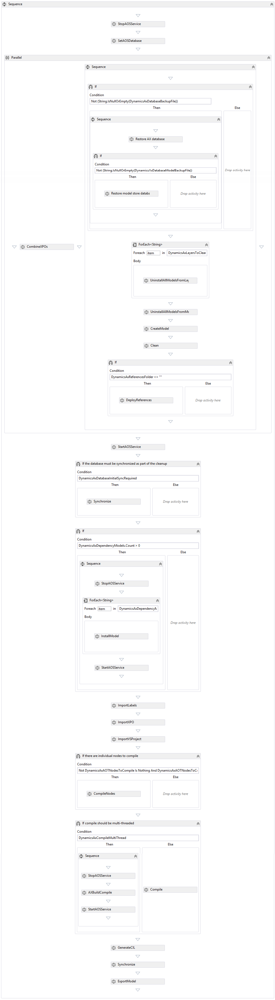

        <span class="Main_Header">CodeCrib.AX.TFS - Advanced Workflow for TFS 2012</span><br/>
        This workflow is currently in use at our Sikich offices to build RTM, R2 and R3. You can download the actual XAML file <a href="daxmusings-dl/AdvancedWorkflowTFS2012.zip">here</a>.<br />
        <br/>

        
